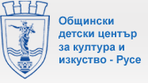
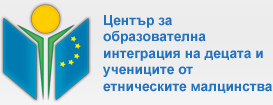

|
|||
|  |  | ||
| начало | броеве | контакти |
| Клуб "Журналистика" | |||
| С какво се занимава клубът? Младите журналисти изучават основни тънкости от занаята, пишат различни по жанр материали, обсъждат и сами редактират своите текстове; Част от темите, по които пишат децата, са свързани с дейността на различните творчески формации към ОБДЦКИ, отразяват проявите и инициативите на центъра и на училищата, в които учат; Участниците в клуба посещават медийни събития и пресконференции; Клубът издава свой нов вестник “Екип 101” /от юни 2007 г./, поддържа собствен сайт в интернет; Всичко всеки може да напише и оформи сам на компютрите в клуба, да сърфира из интернет! Кой може да участва в клуба? Добре дошъл е всеки русенски ученик от V до XII клас; Някои идват тук от любопитство, но остават… Къде и кога са сбирките на клуба? Всяка събота от 10,30 часа в ОбДЦКИ, на ул. “Мария Луиза” 19 /срещу Първо РПУ на МВР/. Повече информация: тел. 845 471; 845 734; 0887 686 143 |
|||
| Общински детски център за култура и изкуство | |||
Ние сме Общински Детски Център за Култура и Изкуство, където в 20 формации/клубове, школи, ансамбли, хорове и др., над 900 деца и младежи на възраст от 5 до 25 години, развиват художествено-творческа дейност, изявяват своя талант, разширяват своите знания в областта на културата и изкуството. С прекрасните и атрактивни народни песни и танци фолклорните ансамбли „Зорница”, „Русчуклийче” и „Здравец” разнасят славата на България по целия свят. Малките славейчета от школата за народно пеене, детска вокална група „Слънце”, вокална студия „Евроталант” и солистите от студио „Естрада” печелят награди от престижни конкурси у нас и в чужбина. Завладяващи са танците на формация за модерен балет „Мираж”, която също има в колекцията си редица награди от национални и международни фестивали и конкурси. Призови купи и медали красят витрините на центъра, получени на републикански турнири от девойките от клуба по спортни танци „Фламинго” и клуба по акробатичен рокенрол „Маги”. Детско-девически хор „Дунавски вълни” вече 57 години защитава певческата слава на град Русе и България по световните сцени. Малките певци имат почетатели в Италия, Швейцария, Чехия, Испания, Русия, Германия и др. Свои фенове имат и артистите от двете формации на студио „Театър”, които се връщат от всеки фестивал и конкурс с награди и нов творчески заряд. Рисунките на децата от школата по изобразително изкуство отдавна са в каталозите и колекциите на детските галерии в Япония, Индия, Македония, Румъния, а младите художници всяка година участвуват в национални и международни конкурси, пленери, биеналета. Свой принос в дейността на центъра имат и клубовете: „Непресъхващ извор”, „Журналистика”, „Приятели на книгата”, студио „Слово” и школите по пиано, акордеон, тамбура и гайда. От началото на творчески сезон 2005 – 2006 ще започне своята дейност и клуб „Кино, Видео и Анимация”. Центърът развива богата концертна дейност. Организира детски шоу програми, състезания, изложби, утра. Домакин е на регионални, национални и международни конкурси. Работи по нови проекти. Развива богата международна дейност. Общински детски център за култура и изкуство |
© 2008 Клуб "Журналистика". Всички права запазени. |
Всяко копиране, репродуциране или променяне на информацията в този сайт е забранено. |
Цитирането става само след съгласието на авторите и със задължително позоваване на източника. |